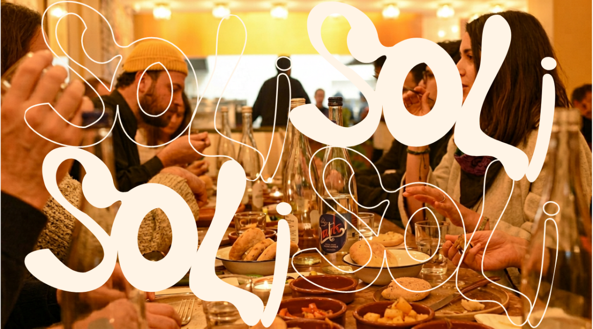
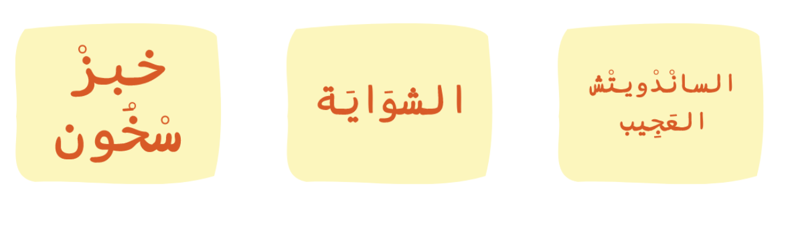
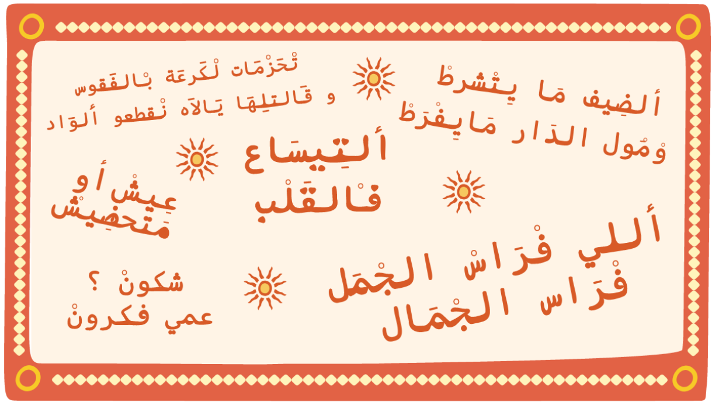
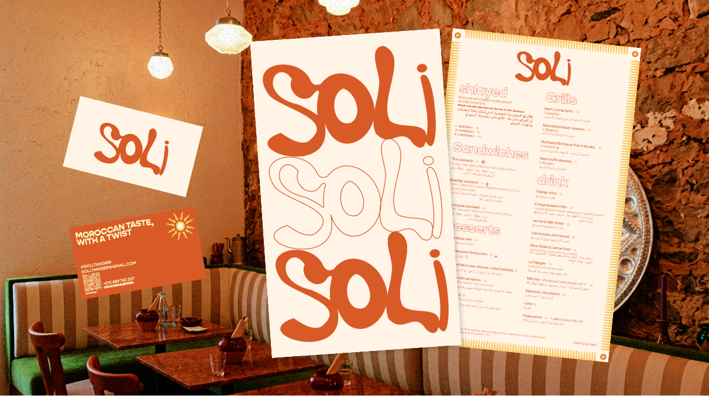
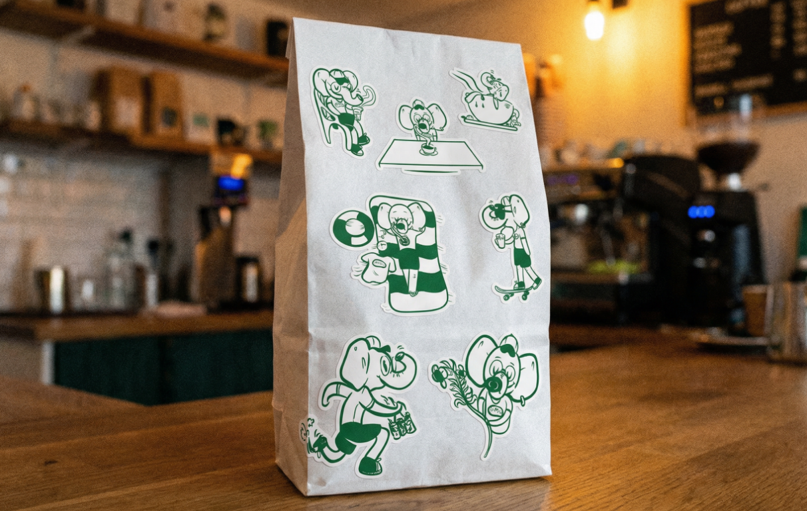
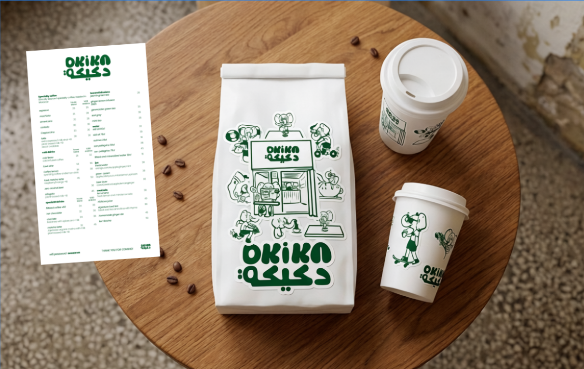
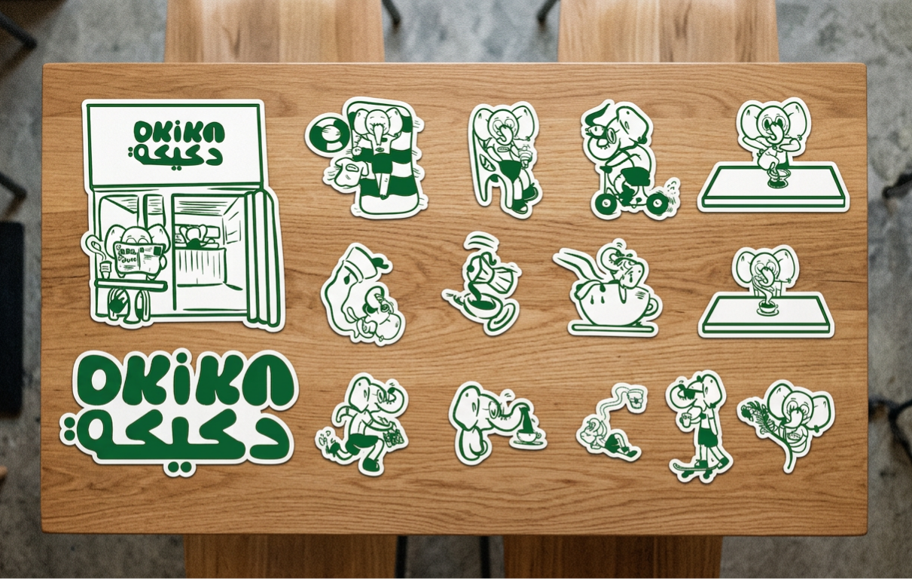
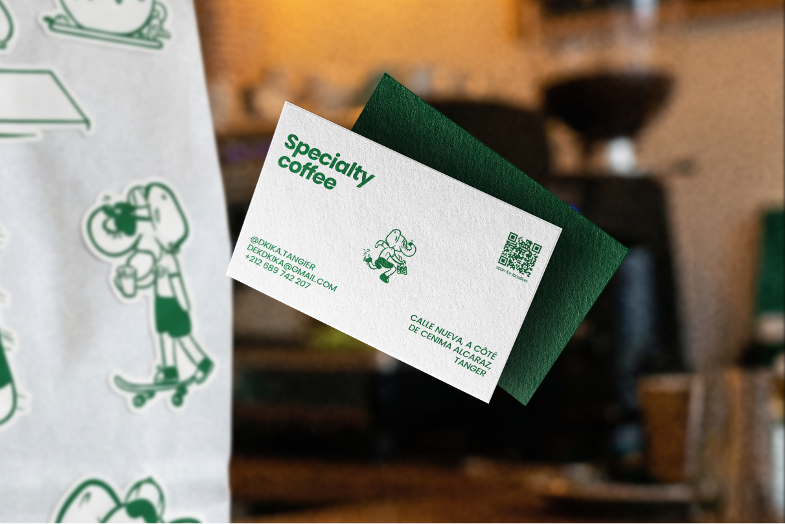
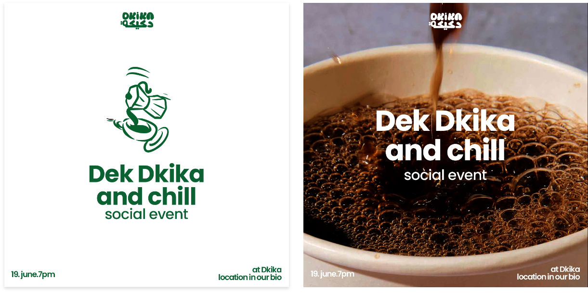
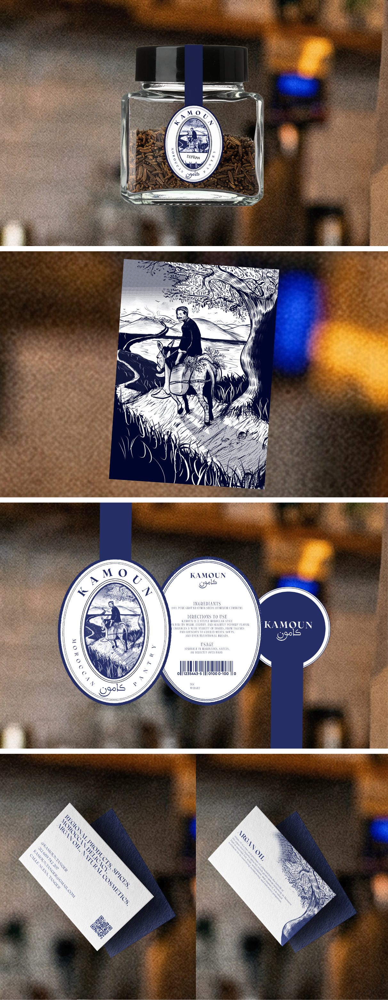

SOLI is structured around three stations: the Bread Station, the Grill, and a hybrid station that combines both
For each station, we developed a typographic system designed to coexist with the main logo.

SOLI is structured around three stations: the Bread Station, the Grill, and a hybrid station that combines both
For each station, we developed a typographic system designed to coexist with the main logo.

For SOLI, we aimed to create a unique and immersive experience. The client envisioned a concept that takes customers on a nostalgic journey through carefully selected cultural quotes reflecting Moroccan identity, which we planned to paint on the walls of SOLI. Instead of visually illustrating the culture, this approach allows customers to engage with it on a more personal and tailored level through reading creating a more authentic way of experiencing and interacting with the space.


For DKIKA, I proposed to Seif and Lamiae the idea of creating a persona that embodies the spirit of their coffee shop. This is how the Elephant was born an identity inspired by their childhood memories and personalities. The concept imagines a typical day in the life of an elephant who owns a coffee shop in Tangier, driven by a deep passion for coffee. From this narrative, the entire visual identity was developed.





In terms of print, the identity was designed to live primarily through stickers, applied across takeaway cups, coffee bean bags, T-shirts, and other branded materials.

We all know how Moroccan traditional pantries can feel intimidating. The moment you step in, you’re immediately bombarded with an overwhelming variety of choices. That’s where KAMOUN comes in. KAMOUN’s main goal is to target people visiting Tangier who want to experience the richness of the Moroccan pantry but can’t deal with the overload of options. The idea behind the visual identity is to stay connected to the roots of traditional pantry sellers while using that connection to highlight and celebrate its origins.